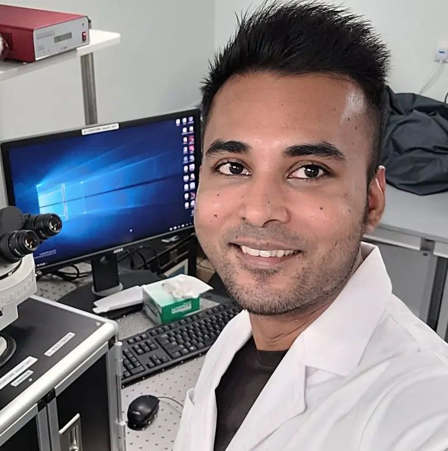

Biologist · Engineer · Tool builder
I study how genes build patterns in living tissue, and I build the open, low-cost tools (imaging methods, robots and AI software) that make those questions easier to answer.
Senior Postdoc, Department of Biological Sciences
Research Associate, Yong Loo Lin School of Medicine
National University of Singapore
Parallels in leg and wing proximal-distal patterning in Diptera and Lepidoptera, now out in Developmental Biology Advances.
Read → New toolFISHER_α, an open-source automatic fish feeder that pairs each feeding with a light cue, for behavior experiments.
See FISHER → New atlasSearch gene expression images from butterfly wings and brains and zebrafish larvae.
Open atlas →How new body features arise, studied at the level of genes, cells and tissues.
Wnt, BMP, Notch, FGF and EGFR pathways in pattern formation and tissue shaping.
Sensory systems and gene expression in nerve cells at subcellular resolution.
Deep learning for images, spatial biology and image analysis.
Smart, low-cost machines that run biology experiments.